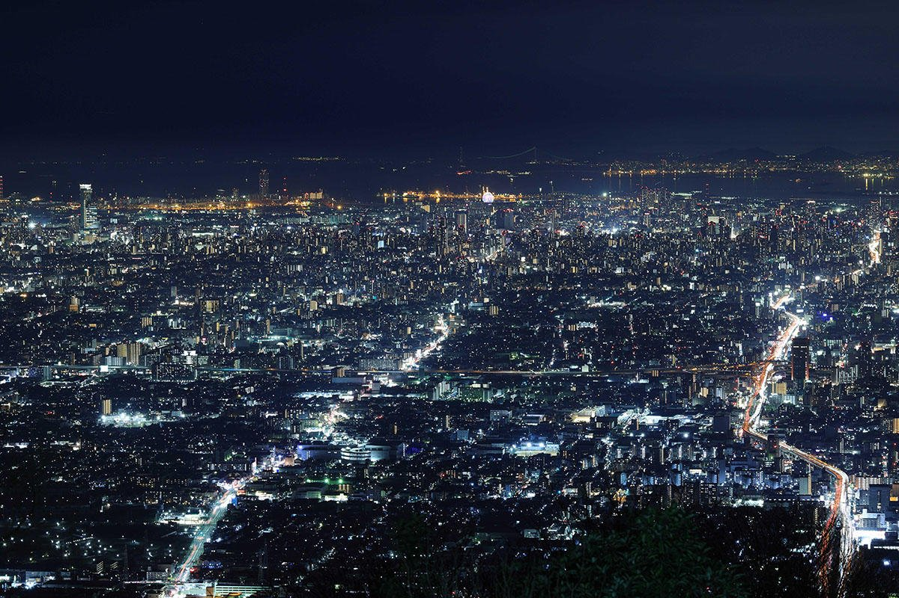

One coin. Two faiths in one night — a Buddhist mountain temple and a Shinto shrine town, both after dark.
The mountaintop park is closed or off its night hours today, so tonight's easy, self-guided route trades the summit deck for a shorter cable ride to Hozanji, a Buddhist temple partway up the mountain, opening with a free skyline view and closing with a slower, quieter finale at Ishikiri Tsurugiya Shrine. Meet at Aramoto Station around 5pm (autumn season).
This route ends up being something the main route isn't: a single evening that moves between Japan's two major religious traditions. Hozanji, partway up the mountain, is a working Buddhist temple with roots to 655 AD. Ishikiri Tsurugiya Shrine, where the night ends, is Shinto, with its own much older founding legend. Very few nights let you stand in both kinds of sacred space, lit by nothing but lanterns and streetlight, within a few hours of each other.
Instead of rides and lights, tonight's middle stretch is a night view over Nara from a mountainside temple, followed by more time in Ishikiri's shrine town — through its street of fortune tellers that's been read by locals for generations, and finally to the quiet ritual of ohyakudo mairi, a hundred-times pilgrimage walked by visitors who came for reasons of their own.
Bring a flashlight: parts of tonight's route — the temple grounds, the shrine paths — are only as bright as the lanterns and streetlight allow. A phone flashlight works, but a real one is worth packing.